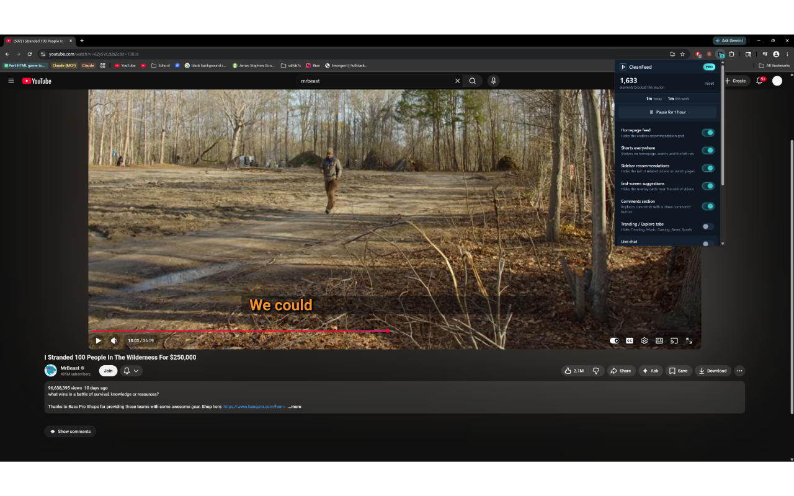

One sentence
CleanFeed is a Chrome extension that hides YouTube distractions with 14 toggleable blockers, PIN-protected Focus Lock, and a built-in Pomodoro mode.
Everything you need to write about CleanFeed. Grab assets, copy descriptions, and publish.
Press inquiries: [email protected]
CleanFeed is a Chrome extension that hides YouTube distractions with 14 toggleable blockers, PIN-protected Focus Lock, and a built-in Pomodoro mode.
CleanFeed is a Chrome extension that hides YouTube's homepage feed, Shorts, recommendations, comments, end-screen suggestions, and 9 other distraction elements — 14 toggleable blockers total. It includes a PIN-protected Focus Lock with hold-to-unlock friction and a Pomodoro mode that auto-cycles 25/5 focus phases. Free tier covers any 2 blockers forever; $4.99 one-time unlocks the rest. No subscription.
CleanFeed is a Chrome extension that lets you decide which parts of YouTube you actually want to see. Hide the homepage feed, Shorts, the recommended sidebar, comments, end-screen suggestions, mixes, merch shelves, breaking news, and 6 other elements — 14 toggleable blockers in total. Toggle them individually for different YouTube pages with per-page rules.
Where most YouTube focus tools rely on willpower, CleanFeed adds friction. Its Focus Lock requires a PIN and a 60-second hold-to-unlock to disable. A built-in Pomodoro mode auto-cycles 25-minute focus phases and 5-minute breaks, locking all blockers on during focus and releasing them on break. Keyword blocking hides any video whose title contains words you choose.
CleanFeed's free tier gives any 2 blockers forever. Pro is a $4.99 one-time payment — not a subscription. The extension was built by solo indie developer Vito Lomonaco and is open source on GitHub.

30-second demo showing CleanFeed hiding YouTube distractions in real time.

Right-click → Save as

Right-click → Save as

Right-click → Save as

Right-click → Save as

Right-click → Save as
| Free tier | Any 2 blockers, forever. No account required. |
| Pro | $4.99 one-time. Unlocks all 14 blockers, Focus Lock, Pomodoro mode, keyword blocking, per-page rules. |
CleanFeed was built because existing YouTube focus tools didn't go far enough. Unhook is free and popular but bare-bones — no Focus Lock, no Pomodoro, no keyword filtering. DF Tube went subscription-only with a 1-hour daily limit, and the reviews are brutal. There's a clear gap for a tool that's both granular and fairly priced.
The product is built around two ideas: hide only the bait (granular toggles, not nuking the platform), and add friction for the impulsive disable (Focus Lock takes 60 seconds of holding to bypass). Pomodoro mode automates the focus/break rhythm so users don't have to remember.
CleanFeed is bootstrapped, built solo by Vito Lomonaco. Currently in Chrome Web Store review, launching publicly on Wednesday, May 27, 2026 via Product Hunt.